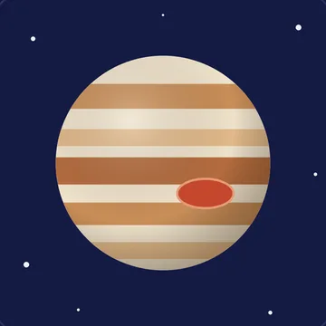
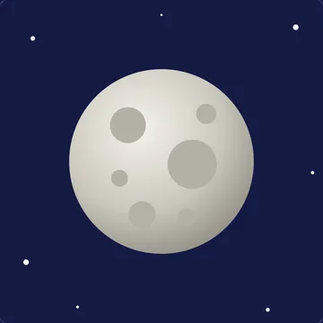
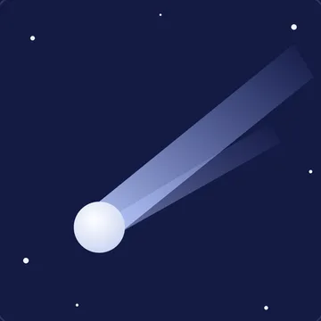
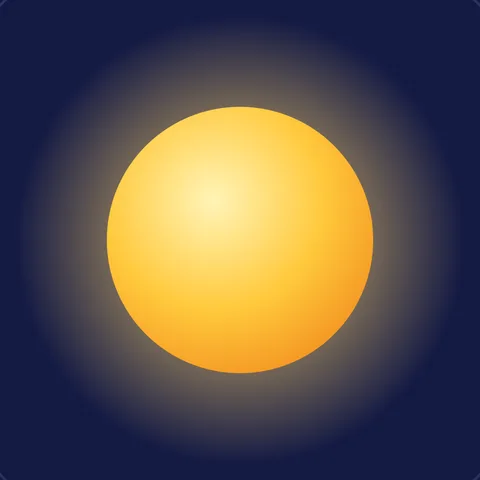

Kind 1 · ☝️ 1 finger
Planets
行星
Planets go around the Sun.
行星繞著太陽轉。
8 planets: Mercury, Venus, Earth, Mars, Jupiter, Saturn, Uranus, Neptune
太陽系有 8 顆行星。
太陽系有 8 顆行星。




🌙 Moon counts are the numbers Teacher Shannon taught in class — scientists keep finding new moons!
衛星數量依課堂投影片；科學家還在持續發現新的衛星。
In class we showed fingers. Here, tap a number for each one!課堂上我們比手指，這裡請幫每個天體按一個數字！